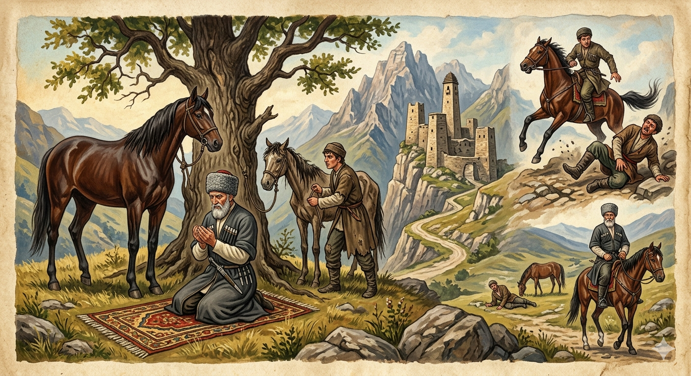

И.А. Дахкильгов. Хьехаме дувцарш - поучительные рассказы-притчи.
И.А. Дахкильгов. Хьехаме дувцарш - поучительные рассказы-притчи. Из ингушского фольклора.

Бекхам хургба
ЙоргӀа дын тӀа вагӀаш, наькъаводаш хиннав цхьа воккха саг. Къоала ухача цхьан къонахчун бӀарг тӀаэттаб цу воккхача сага дын тӀа. Цхьан гаьн кӀала, ды дӀа а тесса, ламаз де эттав воккха саг. Циггач тӀавенав цунна из къу саг. Цхьа во говра хиннай цунгара яр. Къу саго хаьттад: - Хьо Ӏилам дийша саг ва, алал сога, даьча зуламах бекхам маца хул? - Мичча хана хинна а, шу доале а итт шу доале а, цкъа бекхам ца хулаш зулам дусаргдац, - жоп а денна, ший шоллагӀа дола ламаз де волавеннав воккха саг. Цо ламаз деча юкъа къу саго ший говрг гаьнах дӀа а тесса, воккхача сага йоргӀа дын тӀа а хайна, дӀийккхав. Кхы дукха гаьна из валалехьа, цхьан хӀамах из йоргӀа ды къаьхкаб. Чувежача цу къу сага шаккхе ност йийнай. ГӀотта ца луш иллав из. Ший ламаз даь а ваьнна, цу къу сага тишача говра тӀа а хайна, волавенна цу уллача къу сага тӀакхаьчав воккха саг. Къу саго аьннад: - Ва, шу даьлча, итт шу даьлча хургба ма аьннадарий Ӏа бекхам. ХӀаьта ера-м цхьан сахьатах хинна ма баьларий. - Ер бекхам хиннаб хьона, - аьннад воккхача саго, - Ӏа хьалхе а даьча цхьа зуламах, хӀаьта сона даьча зуламах бола бекхам хьона кхы а хургболаш ба. Из къу саг цун ший хиннача тишача говра дӀатӀа а вила, ший йоргӀа дын тӀа а хайна, дӀахо ший наькъах дӀавахав воккха саг.
РУССКИЙ
Возмездие будет
Некий старик ехал на иноходце, приглянувшемся какому-то вору. Старик остановился под деревом, привязал коня и начал молиться. Тут подъехал к нему этот вор на своей кляче. После взаимных приветствий вор спросил: - Вижу, старик, что ты ученый-праведник. Скажи мне: "Когда постигает человека возмездие за тот вред, который он кому-то причинил?". - И через год, и через десять лет. В любом случае, возмездие неминуемо, - ответив так, старик стал совершать очередной намаз. Зная, что старик ни при каких обстоятельствах намаз не прервет, вор спокойно привязал свою клячу, сел на иноходца и умчался. Не успел он скрыться из глаз, как конь чего-то испугался и метнулся в сторону. Вор слетел с него и упал так, что переломал себе обе ноги. Лежит вор и встать не может. Старик завершил намаз, сел на клячу вора и поехал. Вскоре он увидел упавшего и стонущего вора, который тут же укорил старика: - Ты сказал, что возмездие постигнет через год или через десять лет, а меня оно постигло в течение нескольких минут. - Возмездие, которое тебя постигло, - ответил старик, - является наказанием за какой-то ранее тобою совершенный грех. А за вред, который ты пытался причинить мне, возмездие еще ждет тебя впереди. Старик взвалил вора на его клячу, сам сел на своего иноходца и отправился далее по своим делам.
ENGLISH
There will be retribution
An old man was riding a fine horse that had caught the eye of a thief. The old man stopped under a tree, tied up his horse and began to pray. Just then, the thief rode up to him on his own nag. After exchanging greetings, the thief asked: 'I can see, old man, that you are a learned and righteous man. Tell me: 'When does retribution befall a person for the harm they have caused to someone else?' 'It may be in a year, or in ten years. In any case, retribution is inevitable,' replied the old man, and he began to perform his next prayer. Knowing that the old man would not interrupt his prayer under any circumstances, the thief calmly tied up his nag, mounted his horse and galloped off. No sooner had he disappeared from view than the horse took fright at something and bolted to one side. The thief was thrown from the horse and fell so hard that he broke both his legs. The thief lay there, unable to get up. The old man finished his prayers, mounted the thief's nag and rode off. Soon he spotted the fallen, groaning thief, who immediately reproached the old man: 'You said that retribution would come in a year or ten years' time, yet it has befallen me within a matter of minutes.' 'The retribution that has befallen you,' replied the old man, 'is punishment for some sin you committed earlier. But for the harm you tried to inflict on me, retribution still awaits you.' The old man hoisted the thief onto his nag, mounted his own horse, and set off to attend to his business.
НОХЧИЙН
ПОГОВОРКИ
Бус Ӏовужаш ца хезар Ӏуйранна хоз. - Того, что не слышал, ложась спать, услышишь, проснувшись.Воша воаца воша – ткъам боаца лаьча; воша воаца йиша – йокъаеннача гаьна ткъовро. - Юноша без брата – сокол без крыла; девушка без брата – ветка на засохшем дереве.Дошох саг визавац, сискалах визав. - Золото не насыщает человека, а чурек насыщает.Мотт беттачун мотт хадалба оал; аькх ухачун, аькх уххашехьа а, са хадалда, оал. - Говорят, пусть у сплетника язык отсохнет, пусть у доносчика во время доноса душа отлетит.Ше де воаллар дувцаш хилча, ше дергдолчох воал. - Дела не сделает тот, кто заранее бахвалится.Мекъа уст ханал хьалха яь чу бахаб. - Ленивый бык раньше других угодил в котел.Нахацара гоанмоал езе , юхалург ахча ле. - Если хочешь поссориться с людьми, дай им в долг.Шайна даь дика довзаргдолчоа мара дикадар ма де. - Делай добро лишь тому, кто может его оценить.Ший ханнахьа ва ховр – хьаьша ва; ший ханнахьа ваха ховр а ва хьаьша. - Гость тот, кто знает когда приходить в гости и когда уходить.Хоза мотт бола саг наха дукха веза. - Люди любят красноречивого человека.